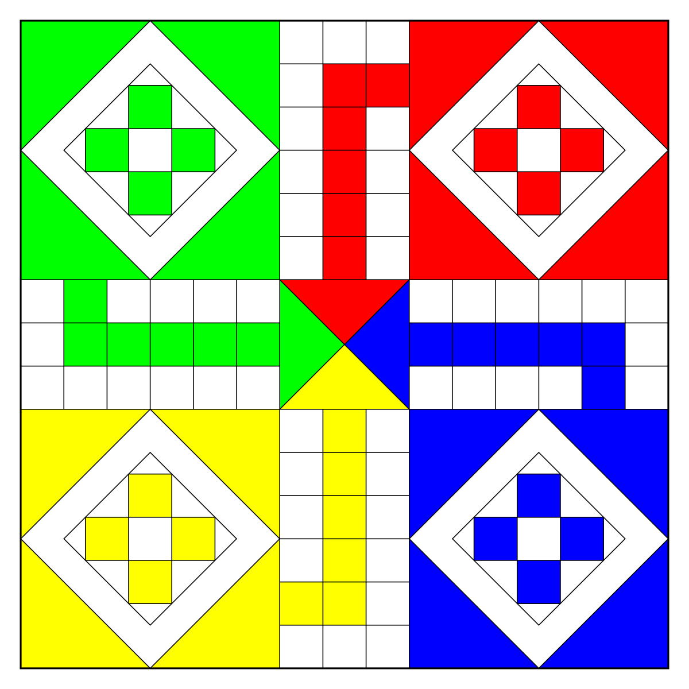
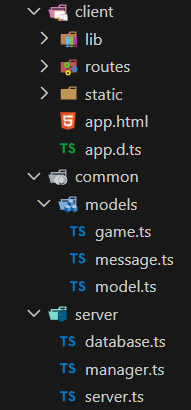
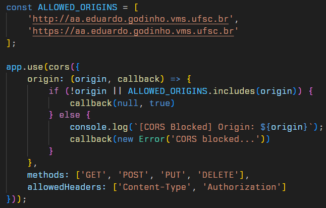
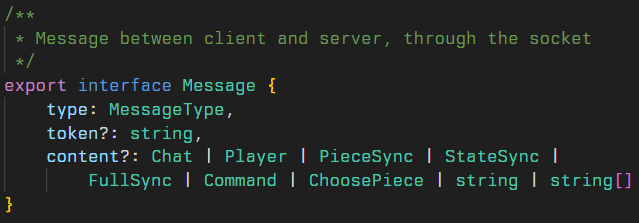
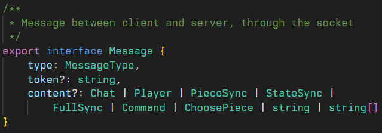

Projeto Web Ludo
- Eduardo Godinho Silveira
- Vitor Silvestri
Introdução
Desenvolvimento de uma aplicação web multiplayer do jogo Ludo

Motivação
-
O estudo Research on Online Games and Social Interaction (2024) investiga como os jogos online se tornaram um dos principais espaços de comunicação e convivência na sociedade contemporânea
-
Para o nosso projeto de Ludo online, essas conclusões reforçam a importância de funcionalidades de interação integradas ao jogo, como o chat global e local, já que jogos mesmo simples podem se tornar espaços de conexão social.
Fundamentação teórica
- Arquitetura Cliente-Servidor
- Protocolos de Comunicação: HTTP, HTTPS e TCP
- Arquitetura REST e APIs Web
- Comunicação em Tempo Real: WebSocket e WebRTC
- NoSQL e Modelagem Não Relacional
- Padrão Arquitetural: Model-View-Controller (MVC)
- Conceitos de Autenticação Baseada em Token
Ferramentas utilizadas
- TypeScript
- Express
- Svelte
- MongoDB
- JSON-Web-Token
- Vite
- Three.JS
Estrutura geral da aplicação

- O código-fonte da aplicações concentra-se em 3 diretórios distintos:
- client: templates, estilos, renderização do jogo e interações com API Restful, WebSockets e WebRTC
- server: disponibilidade do FrontEnd à Web, interações com MongoDB e gerenciamento do estado do jogo e dos sockets de clientes
- common: estruturas comuns do modelo de negócio e da comunicação da aplicação
Segurança da aplicação

- CORS (Cross-Origin Resource Sharing)
- XSS
- Injeção de código
 



Screenshots do jogo